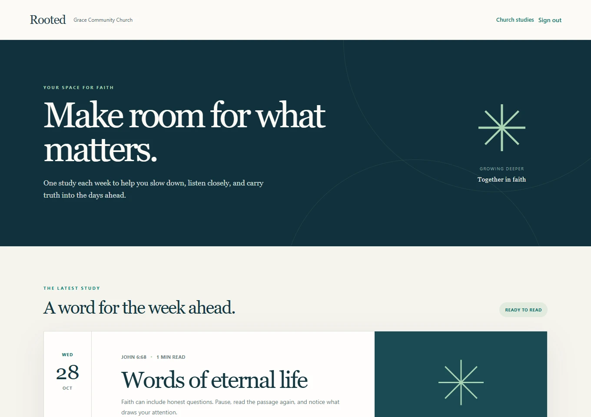

FROM PREPARATION TO PARTICIPATION
One church. Two thoughtful experiences.
Bring sermon notes or an outline → shape a study with the co-writer → review and publish → read and reflect.

Human review comes before publication.
The church decides what is ready to share.